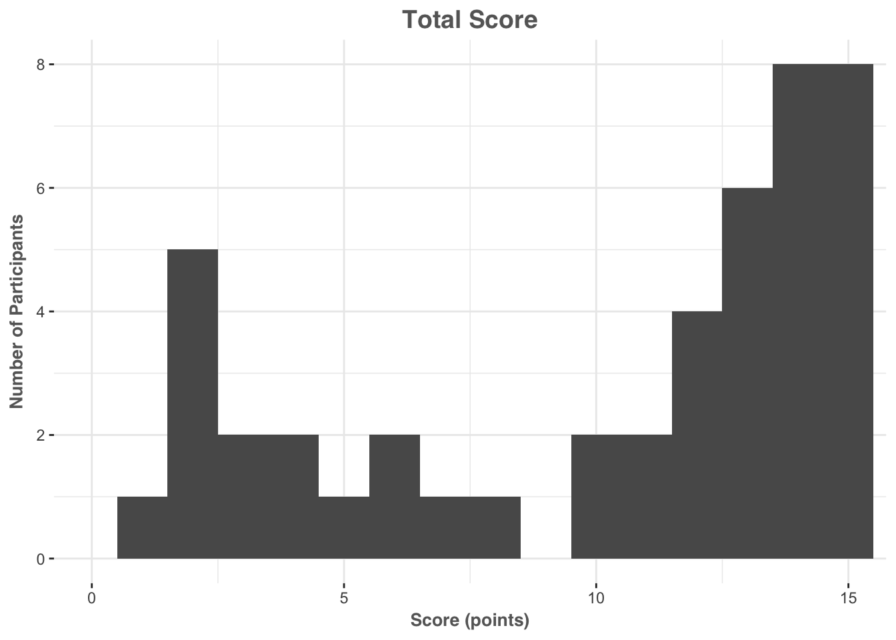
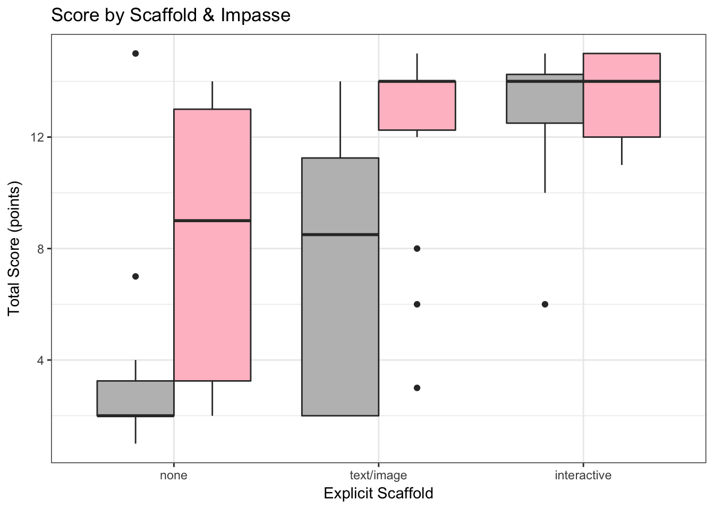
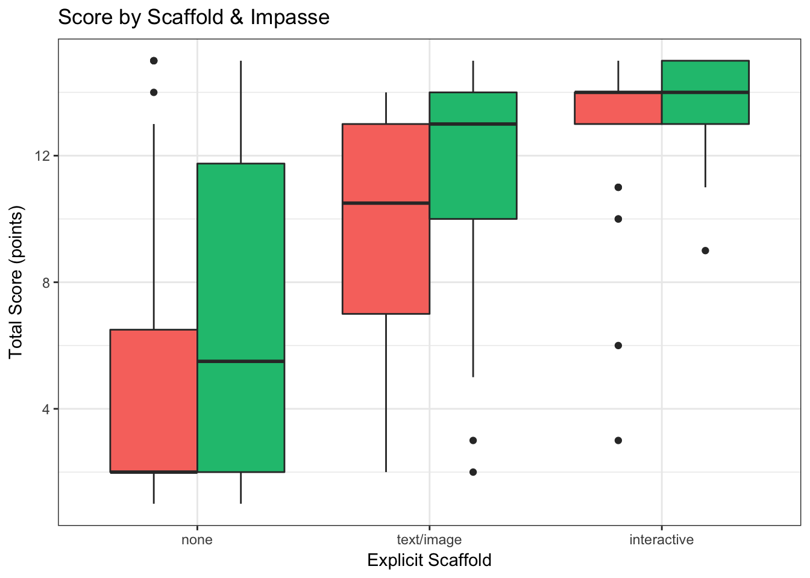
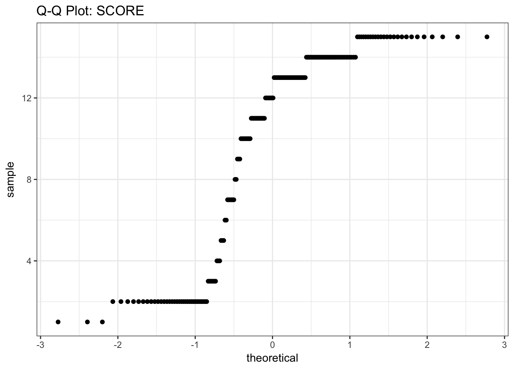
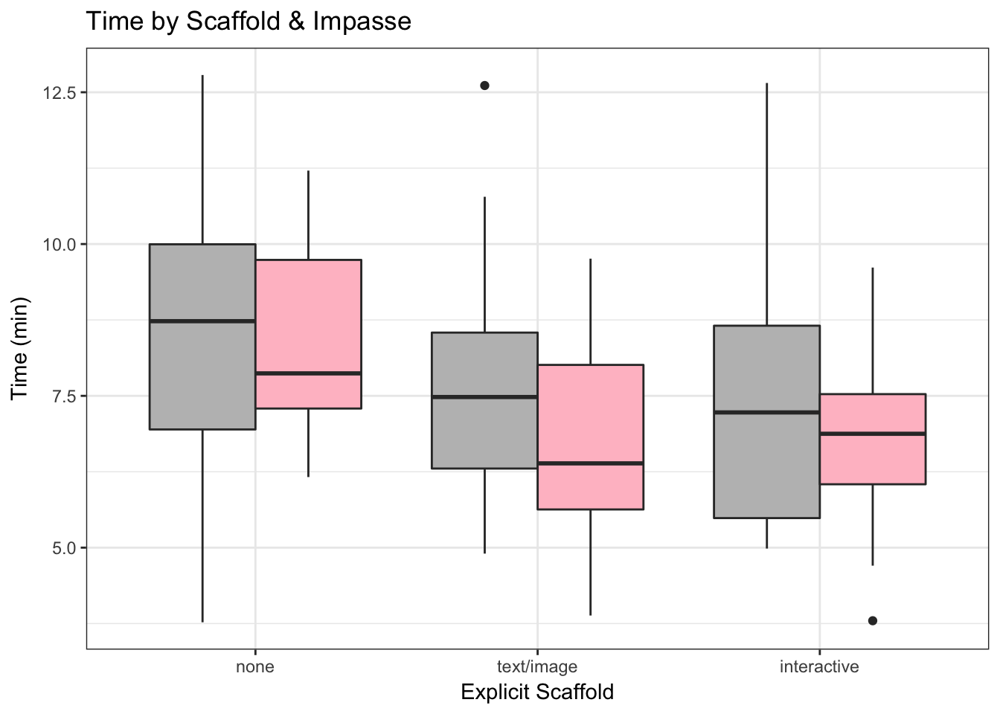
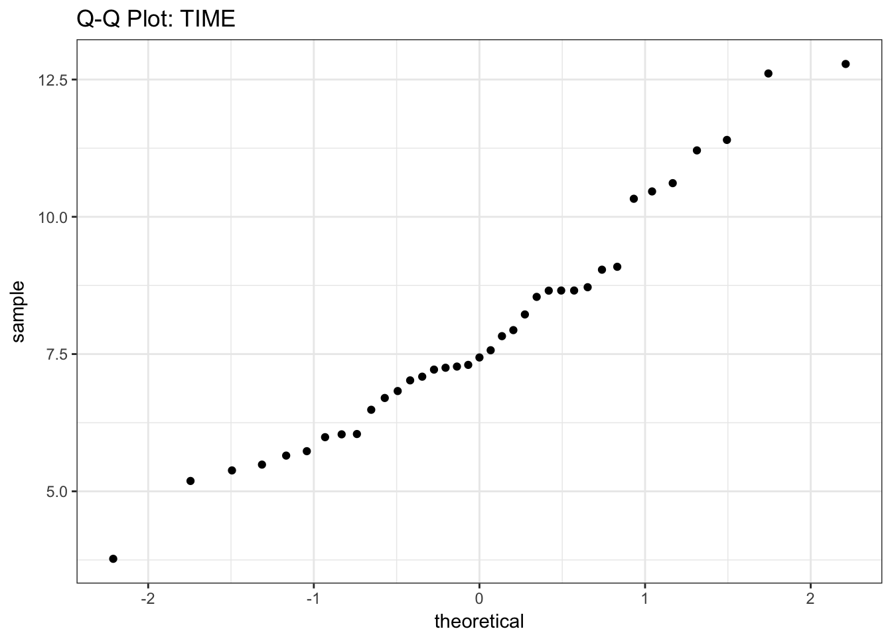
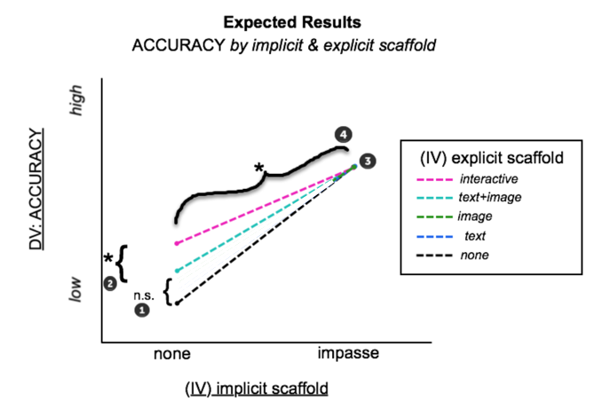
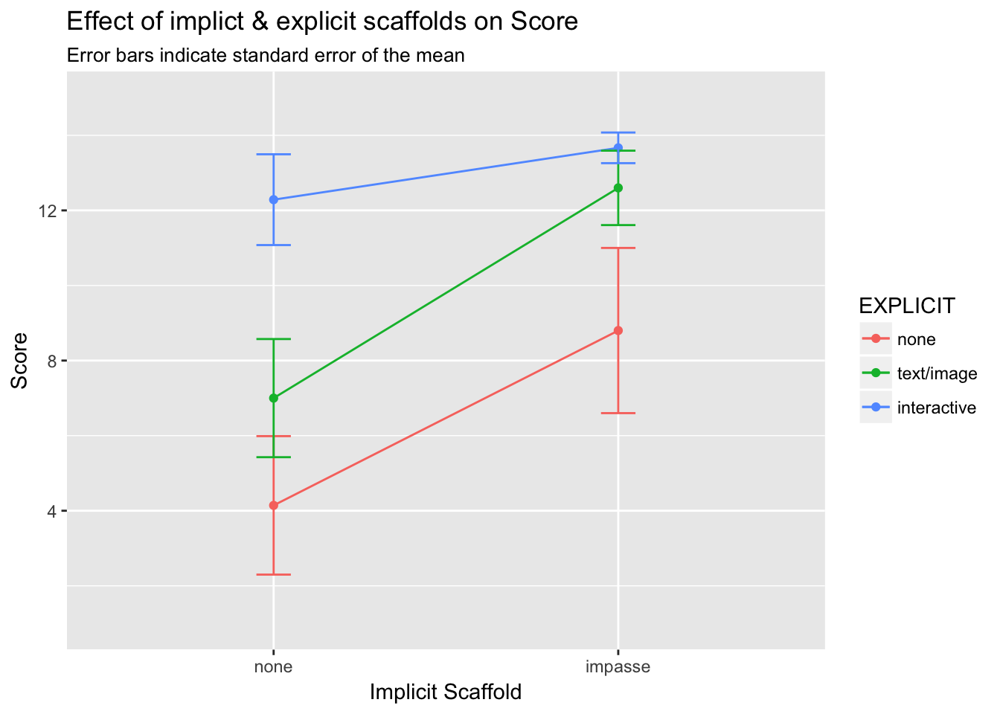
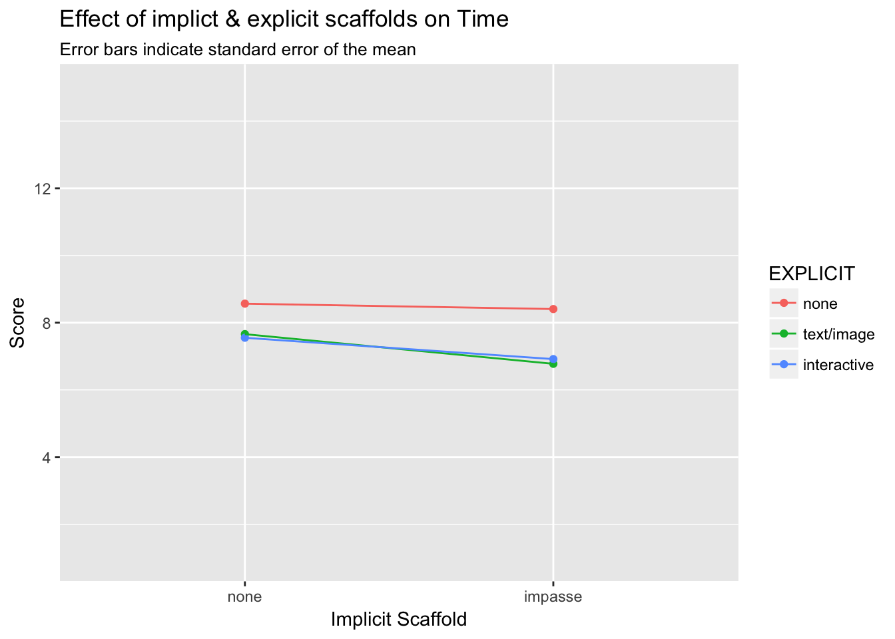

The purpose of this study is to compare the relative efficacy of explicit (ie. visually-salient text or images that serve instructional purpose) and implicit (ie. task and question structure) scaffolding for an unconventional statistical graph. We hypothesize that implicit techniques—specifically presenting a task that forms a mental impasse for the reader—will be more supportive of correct graph interpretation than explicit graph-reading instructions. We base this hypothesis on prior observation and experimental work (Fox & Hollan, in preparation) which revealed that when presented with an unconventional graph with structural elements (ie. axes and grid) that resembled conventional graphs, learners did not always realize they did not understand how the graph was meant to be read. We propose that prior knoweldge of conventional graph systems acts as a form of “graphical fixedness”, that learners must overcome to form correct mental models for new representational systems.
IN PROGRESS DATA COLLECTION TOTALS
| EXPLICIT | ||||
|---|---|---|---|---|
| IMPASSE | none | text/image | interactive | All |
| none | 27 | 25 | 25 | 77 |
| impasse | 21 | 28 | 29 | 78 |
| All | 48 | 53 | 54 | 155 |
Based on the results from Study 2 we predict …
(1) No significant differences will be found the static explicit scaffolds (control, text/image) when no implicit scaffold is present.
(2) Significant differences will be found between the interactive and all other explicit scaffolds.
Based on our hypotheses, we predict…
(3) A significant interaction between implicit & explicit scaffold (implicit scaffold will be equally effective across all types of explicit scaffold)
(4) The implicit scaffold will be more effective than any of the explicit scaffolds ( explicit[none]implicit[impasse] will be significantly better than all of the explicit[]implicit[none] conditions)
We utilized a 3 (explicit scaffold: none, text/image, interactive) X 2 (implicit scaffold: none, impasse) between-subjects factorial design, with response time and score (max = 15) as dependent variables.
155 students (63 % female) registered as STEM majors at a public university in the United States participated in exchange for course credit (age: 18 - 33 years).
The mean score across the entire sample was approximately 10 points (out of 15), with a standard deviation of 0.4 , and values ranging from 1 to 15 points.

A Shapiro-Wilk test for normality yielded a value of 0.8002506, p = 2.8357354\times 10^{-13} suggesting that the distibution is significantly non-normal.


The mean total runtime across the sample was approximately 8 minutes, with a standard deviation of 0.16 minutes, and values ranging from 4 to 13 minutes.

A Shapiro-Wilk test for normality yielded a value of 0.9781694, p = 0.0145967 suggesting that the data are from a normally-distributed population.


| EXPLICIT Scaffold | ||||||
|---|---|---|---|---|---|---|
| none | text/image | interactive | ||||
| IMPASSE | mean | sd | mean | sd | mean | sd |
| none | 4.6 | 4.7 | 9.0 | 4.6 | 12.9 | 2.9 |
| impasse | 7.1 | 5.0 | 11.8 | 3.7 | 13.5 | 1.5 |
(Expected Results) 
#FACTORIAL ANOVA ON LM OF
# model = lm(triangular_score ~ explicit + impasse + explicit:impasse,
# data = df_subjects)
# Anova(model,type = "II")
aov.out = aov(triangular_score ~ explicit * impasse, data=df_subjects)
options(show.signif.stars=T)
summary(aov.out)
## Df Sum Sq Mean Sq F value Pr(>F)
## explicit 2 1464.9 732.4 49.488 < 2e-16 ***
## impasse 1 145.8 145.8 9.854 0.00204 **
## explicit:impasse 2 38.0 19.0 1.282 0.28046
## Residuals 149 2205.2 14.8
## ---
## Signif. codes: 0 '***' 0.001 '**' 0.01 '*' 0.05 '.' 0.1 ' ' 1
options(show.signif.stars=T)
TukeyHSD(aov.out, show.signif.stars=T)
## Tukey multiple comparisons of means
## 95% family-wise confidence level
##
## Fit: aov(formula = triangular_score ~ explicit * impasse, data = df_subjects)
##
## $explicit
## diff lwr upr p adj
## 2-1 4.801101 2.9864097 6.615792 0.0000000
## 3-1 7.532407 5.7257196 9.339095 0.0000000
## 3-2 2.731307 0.9703139 4.492300 0.0009721
##
## $impasse
## diff lwr upr p adj
## 2-1 1.932451 0.7112206 3.153682 0.0021254
##
## $`explicit:impasse`
## diff lwr upr p adj
## 2:1-1:1 4.4474074 1.3645364 7.530278 0.0007356
## 3:1-1:1 8.3274074 5.2445364 11.410278 0.0000000
## 1:2-1:1 2.5502646 -0.6814623 5.781991 0.2095206
## 2:2-1:1 7.2288360 4.2329450 10.224727 0.0000000
## 3:2-1:1 8.9246488 5.9542231 11.895074 0.0000000
## 3:1-2:1 3.8800000 0.7384024 7.021598 0.0063771
## 1:2-2:1 -1.8971429 -5.1849386 1.390653 0.5563912
## 2:2-2:1 2.7814286 -0.2748608 5.837718 0.0970521
## 3:2-2:1 4.4772414 1.4459098 7.508573 0.0005006
## 1:2-3:1 -5.7771429 -9.0649386 -2.489347 0.0000168
## 2:2-3:1 -1.0985714 -4.1548608 1.957718 0.9044137
## 3:2-3:1 0.5972414 -2.4340902 3.628573 0.9928826
## 2:2-1:2 4.6785714 1.4721918 7.884951 0.0006118
## 3:2-1:2 6.3743842 3.1917853 9.556983 0.0000006
## 3:2-2:2 1.6958128 -1.2470158 4.638641 0.5578632

#CALULCULATE PAIRWISE DIFFERENCE & EFFECT SIZE (independent sample t-test with numeric y and binary x)
mainEffectGraph <- t.test(triangular_score ~ impasse, data=df_1)
mainEffectGraph
##
## Welch Two Sample t-test
##
## data: triangular_score by impasse
## t = -1.7966, df = 42.048, p-value = 0.07959
## alternative hypothesis: true difference in means is not equal to 0
## 95 percent confidence interval:
## -5.4148212 0.3142921
## sample estimates:
## mean in group 1 mean in group 2
## 4.592593 7.142857
t <-mainEffectGraph$statistic[[1]]
t <-round(t,2)
df <-round(mainEffectGraph$parameter[[1]],0)
p <-mainEffectGraph[3]
r <- sqrt(t^2/(t^2+df))
r <-round(r,2)
r
## [1] 0.27
#explore descriptive statistics based on each IV
desc_control <- by(df_1$triangular_score, list(df_1$impasse), stat.desc, basic=FALSE)
desc_control
## : 1
## median mean SE.mean CI.mean.0.95 var
## 2.0000000 4.5925926 0.9124952 1.8756607 22.4814815
## std.dev coef.var
## 4.7414641 1.0324156
## --------------------------------------------------------
## : 2
## median mean SE.mean CI.mean.0.95 var
## 7.0000000 7.1428571 1.0873421 2.2681560 24.8285714
## std.dev coef.var
## 4.9828277 0.6975959
nonimpasse_mean = desc_control$`1`[2]
nonimpasse_SD = desc_control$`1`[6]
impasse_mean = desc_control$`2`[2]
impasse_SD = desc_control$`2`[6]For participants in the no-scaffold control condition, we see that we see participants presented with non-impasse questions (M = 4.59, SD = 5) are significantly lower than those with impasse questions (M = 7.14, SD = 5), t(42) = -1.8, p = 0.079585 , r = 0.27.
# bar <- ggplot(df_1, aes(x = impasse, y= triangular_score))
# bar + stat_summary(aes(y = triangular_score, group=impasse), fun.y=mean, geom="bar", position="dodge") +
# stat_summary(fun.data = mean_cl_normal, geom="errorbar", position = position_dodge(width=0.9),width=0.2) +
# labs (x = "Graph Task ", y= "Score", fill="Graph Task") +
# coord_cartesian(ylim=c(0,15)) +
# scale_x_discrete(labels=c("non-impasse" = "impasse"))+
# theme_bw() +
# theme(strip.background = element_blank()) +
# ggtitle("Mean Score for no-scaffold by Impasse Structure")| EXPLICIT Scaffold | ||||||
|---|---|---|---|---|---|---|
| none | text/image | interactive | ||||
| IMPASSE | mean | sd | mean | sd | mean | sd |
| none | 8.6 | 2.2 | 7.7 | 1.9 | 7.6 | 2.2 |
| impasse | 8.4 | 1.6 | 6.8 | 1.6 | 6.9 | 1.5 |
## Anova Table (Type II tests)
##
## Response: tt_min
## Sum Sq Df F value Pr(>F)
## explicit 50.59 2 7.2645 0.0009762 ***
## impasse 12.72 1 3.6527 0.0578977 .
## explicit:impasse 3.34 2 0.4793 0.6201853
## Residuals 518.78 149
## ---
## Signif. codes: 0 '***' 0.001 '**' 0.01 '*' 0.05 '.' 0.1 ' ' 1
 ```
Copyright © 2017 Amy Rae Fox. All rights reserved.